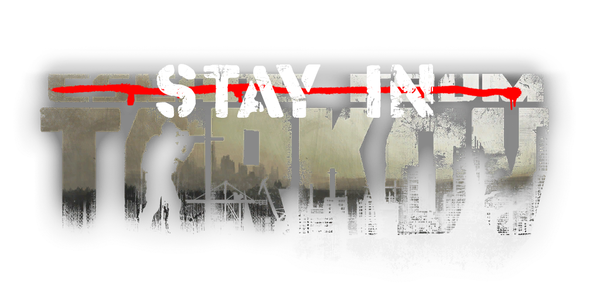

<div class="row">
    <div class="card col-md-12">

        <style>
            c 
            {
                background: url('SIT.png');
                width: 600px;
                text-align: center;
                margin: 0 auto 0 auto;
            }
        </style>

        <div class="card-body">
            <h3>
                
                Escape from Tarkov
            </h3>
            <br>

            <div class="c">
                
            </div>

            <ul class="nav">
                <li class="nav-item">
                  <a class="nav-link active" href="https://github.com/StayInTarkov" target="_blank"><i class="fab fa-github ilink text-white p-1"></i>Stay in Tarkov - GitHub</a>
                </li>
                <li class="nav-item">
                  <a class="nav-link" href="https://discord.gg/f4CN4n3nP2" target="_blank"><i class="fab fa-discord ilink text-white p-1"></i>Stay in Tarkov - Discord</a>
                </li>
                <li class="nav-item">
                  <a class="nav-link" href="https://docs.stayintarkov.com" target="_blank"><i class="fa fa-book ilink text-white p-1"></i>Stay in Tarkov - Documentation</a>
                </li>
                <li class="nav-item">
                  <a class="nav-link" href="https://hub.docker.com/r/stayintarkov/stayintarkov" target="_blank"><i class="fab fa-docker ilink text-white p-1"></i>Stay in Tarkov - Docker by @devbence</a>
                </li>
              </ul>
            
              <hr>
              <p> The largest ever mod that enabled Coop for Escape from Tarkov offline ("SPT"). This mod was written from scatch using a combination .NET, Typescript, Node & Reverse Engineering.  </p>
              <p> This mod had my heart and soul poured into it and after 2 years achieved it's goal at succesfully replicating Live experience and created a framework for other groups to use. </p>
              <p> I learned a tremendous amount about <code>Open Source Project Management</code>, <code>Branching</code>, <code>GitHub Actions</code>, <code>Unity Game Engine</code> and <code>Game Networking</code>.</p>
              <p> This project is <code>open source</code> and actively forked by other groups such as <a href="https://github.com/project-fika">Project Fika</a>. </p>
              <p> I am no longer part of the project and it is under the leadership of other great developers</p>
         
        </div>
    </div>
</div>
